Bloom · Practice responsive typography Git için seçilmiş, düzenlenmemiş native PNG'ler. İki cihaz × üç kategori × fresh/Reset matrisinin 12 koşusu ve 204 gerçek piksel inceleme kaydı korunur. Yüzlerce ara kaydırma karesi yerelde kalır; galeride yalnız temsilî örnekler yayımlanır. Hashler dosya bütünlüğüdür, görsel doğruluk kanıtı değildir.
QA raporu · Piksel inceleme notları · Native matris / gerçek ölçekler · Git screenshot manifesti · Ölçüler ve hashler · Git / yerel arşiv ayrımı
Son lifecycle düzeltmesi metin, stil, tipografi veya yerleşimi değiştirmez. Bu kareler önceki onaylı native koşulardan korunur; yeni screenshot koşusu olarak sunulmaz. Geçici süreler gerçek QA egzersizine, Reset kayıtları sentetik fixture'a aittir.
Bulunan ve düzeltilen gerçek kırpılma 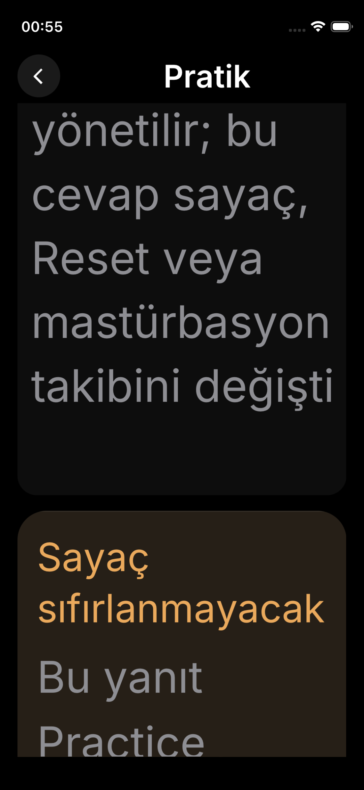
Başarısız dar AX5 · sözcük sonu kesiliyor · REDDEDİLEN ADAY 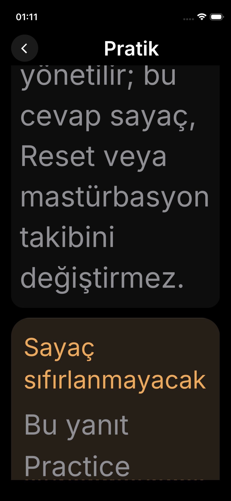
Onaylı düzeltme · takibini / değiştirmez. tam · piksel inceleme notu var iPhone 17 Pro · 402×874 pt · normal / orta / maksimum iPhone 13 mini · 375×812 pt · normal / orta / maksimum Normal / maksimum · tam akışın temsilî durumları Egzersiz Duraklama 1/3 · 1–10 uç etiketleri 2/3 · domain ayrımı 3/3 · yanıtlar ve hisler Özet / açık kaydetme 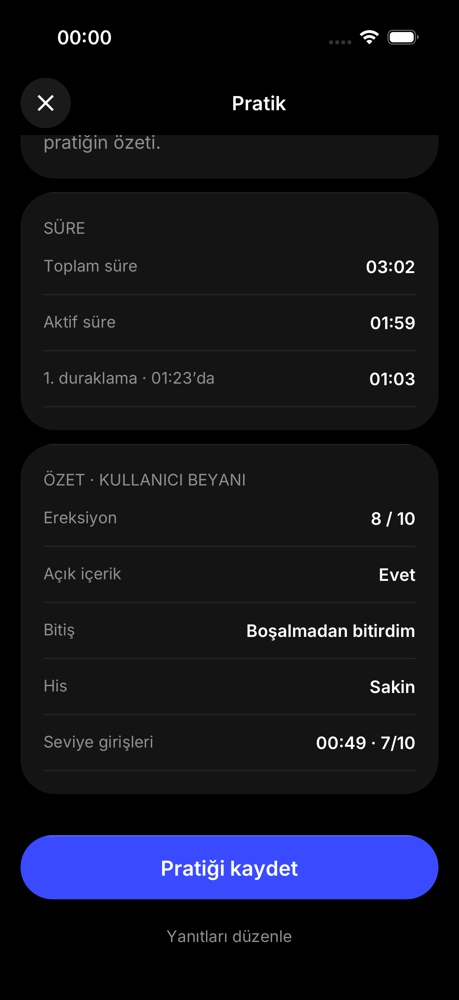
Normal · piksel inceleme notu var Maksimum · piksel inceleme notu var Durable onay Geçmiş cevapları Hata / exact retry HTML / onaylı normal native HTML · tasarım örneği Native · normal · piksel inceleme notu var HTML · tasarım örneği Native · normal · piksel inceleme notu var HTML · tasarım örneği Native · normal · piksel inceleme notu var Onaylar, Reset, Home ve dar ekran ayrıntıları 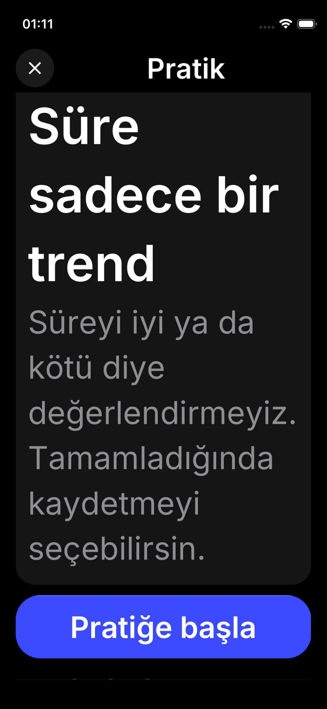
narrow-maximum-intro-actions · piksel inceleme notu var 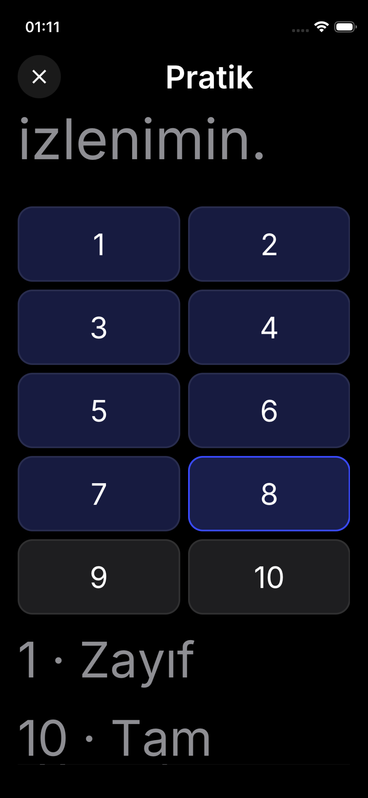
narrow-maximum-question-1-endpoints · piksel inceleme notu var narrow-maximum-question-2-warning · piksel inceleme notu var 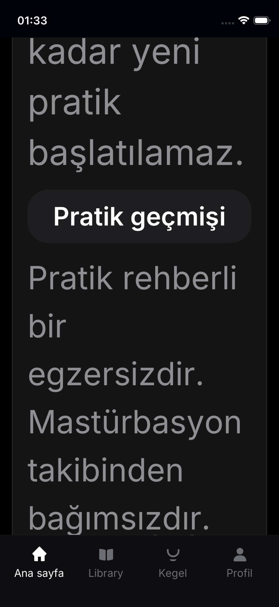
narrow-maximum-reset-reset-home-actions · piksel inceleme notu var 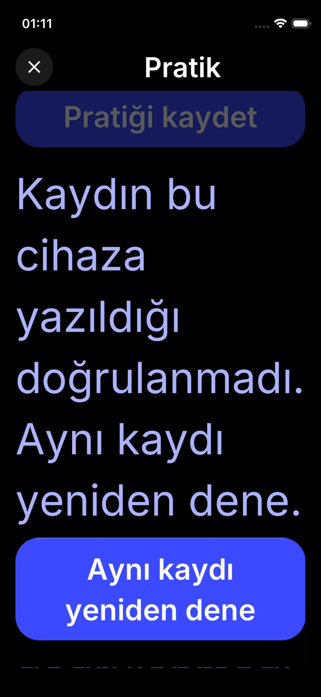
narrow-maximum-save-retry · piksel inceleme notu var 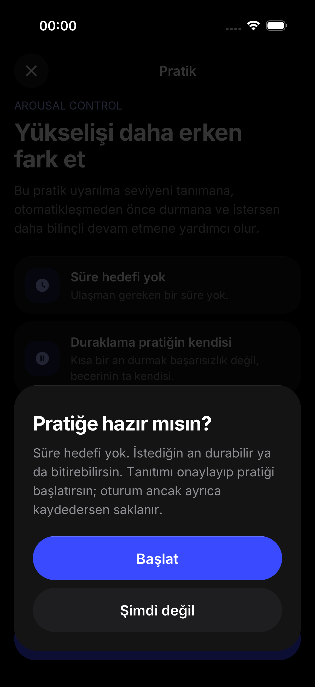
target-default-start-dialog · piksel inceleme notu var 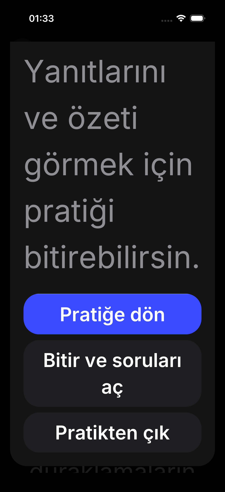
target-maximum-exit-dialog-actions · piksel inceleme notu var 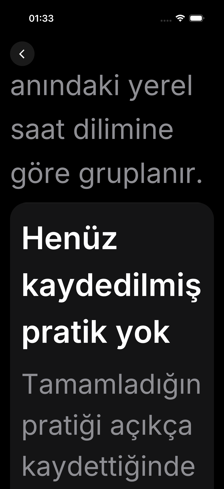
target-maximum-history-empty-body · piksel inceleme notu var 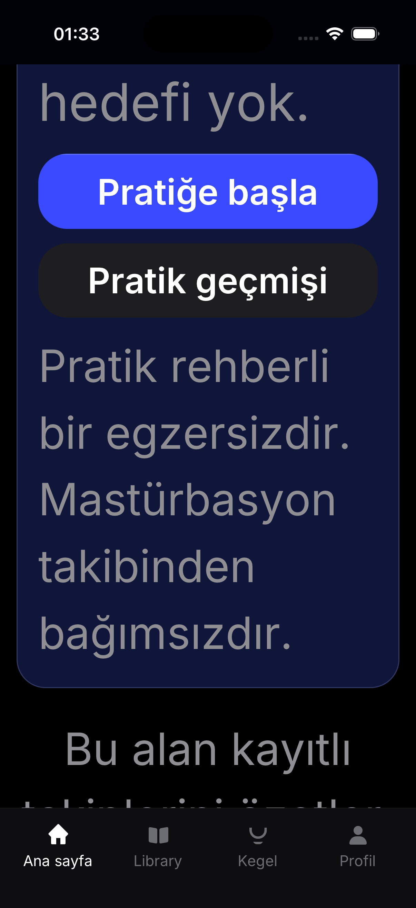
target-maximum-home-practice-actions · piksel inceleme notu var 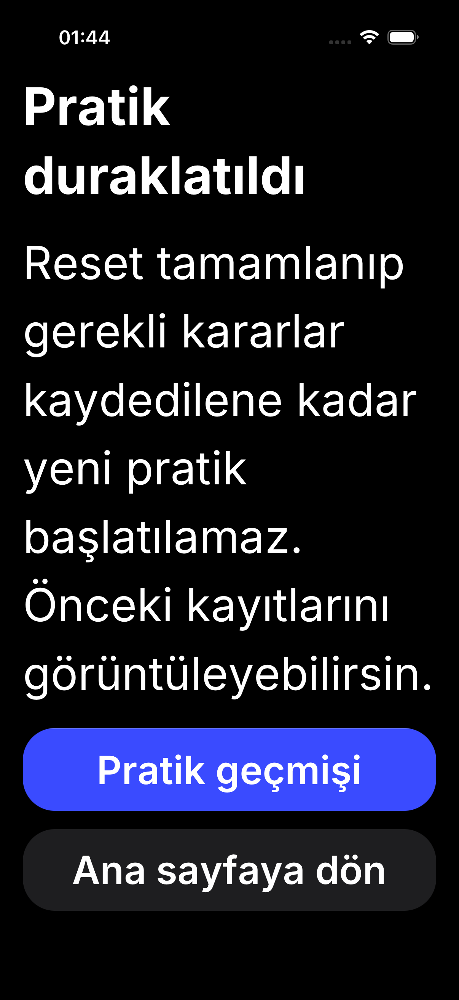
target-maximum-reset-reset-blocked-actions · piksel inceleme notu var 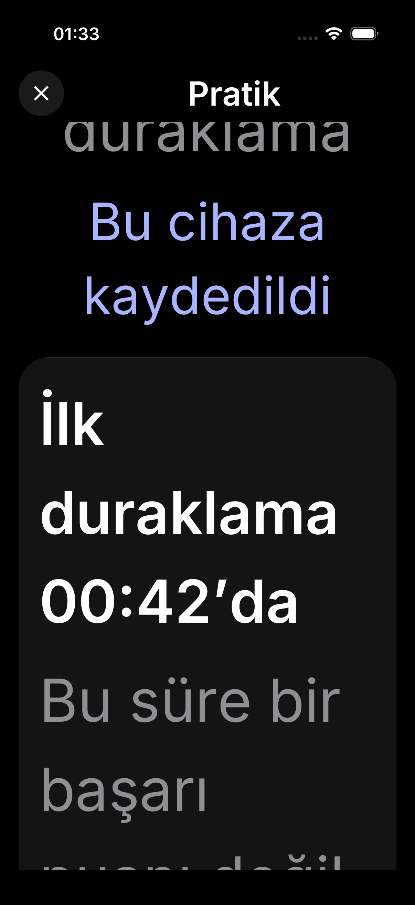
target-maximum-saved · piksel inceleme notu var 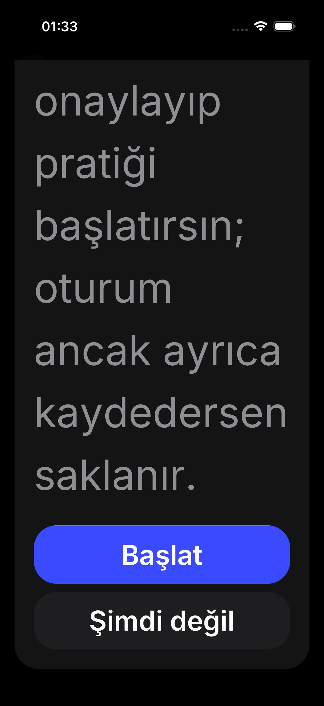
target-maximum-start-dialog-actions · piksel inceleme notu var 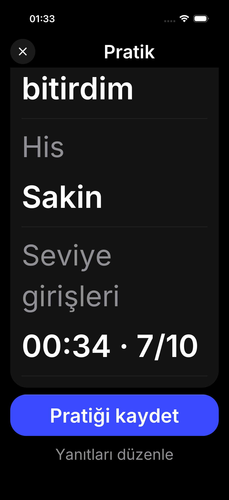
target-maximum-summary-reports · piksel inceleme notu var 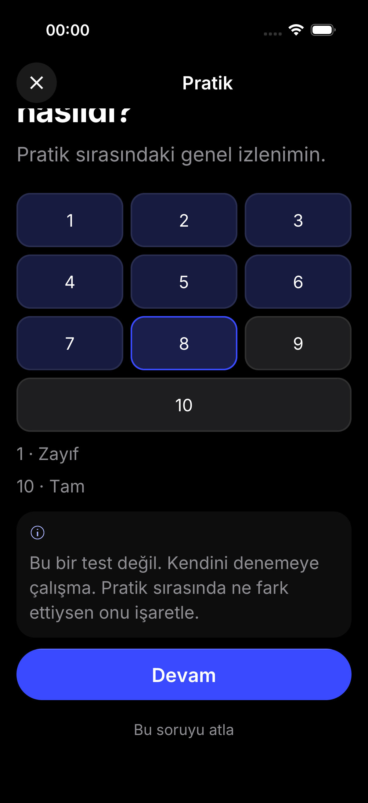
target-moderate-question-1-endpoints · piksel inceleme notu var